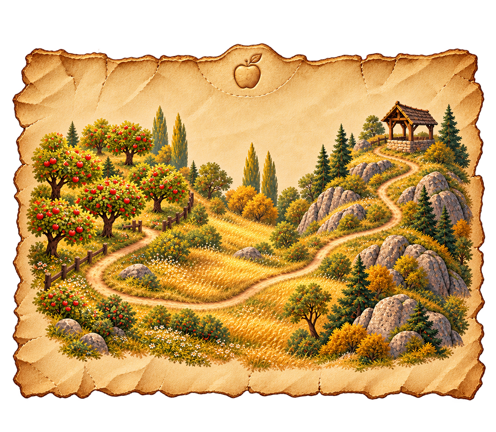

← JoyceLark & Nib’s Treasure Quest
The orchard
The Map Pieces · Episode 2
The Apple Catcher
One loose corner. Three waiting apples.
A very small volunteer basket.
Loading the episode recording…
Catcher mended · First section found
A small clue. A new way.

The orchard section and your second journal page are in your collection. Two map sections together; three spaces still waiting.